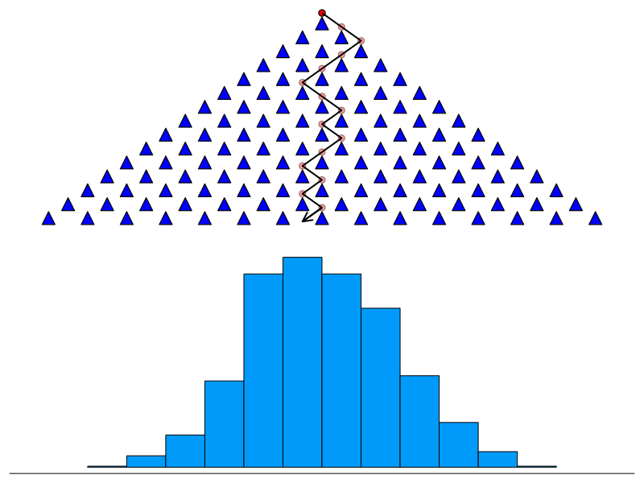

Chapter 4 Normal distributions and the Galton board
This chapter was written by Patrick J. Applegate and Vivek Srikrishnan.
Learning objectives
After completing this chapter, you should be able to
- describe under what circumstances normal distributions arise
- use quantile-quantile plots to determine whether individual data sets are approximately normal or not
- write simple
forloops in Julia
4.1 Introduction
Suppose that we ask a class of students to walk individually from one end of a field to the other and count the number of steps that they take in order to cover the distance. More than likely, each student will get a somewhat different answer. After each student has paced off the field, we then make a histogram of the number of steps taken by the individual students.
If we were to perform this experiment with a large number of students, the histogram would likely resemble a normal distribution. Normal distributions arise when a large number of measurements are taken of a single quantity, and the individual measurements are affected by random processes that are additive and that can be either positive or negative. The general property that a sufficiently large random sample will be well-described by a normal distribution is called the Central Limit Theorem, which is foundational in statistics (the details of the Central Limit Theorem are not essential for this book). In our example, the random processes have to do with the varying stride lengths of the students (some take longer strides and some shorter), and counting errors (which are likely to be small and can cause any given student to either over- or underestimate the actual number of paces they took).
A Galton board is a physical device that demonstrates this concept (Fig. 4.1). A Galton board has rows of pins arranged in a triangular shape, with each row of pins offset horizontally relative to the rows above and below it. The top row has one pin, the second row has two pins, and so forth.
If a ball is dropped into the Galton board, it falls either to the right or the left when it bounces off the top pin. The ball then falls all the way to the bottom of the board, moving slightly to the right or left as it passes through each row of pins. Bins at the bottom of the board capture the ball and record its final position. If this experiment is repeated with many balls, and if the Galton board includes many rows of pins, the number of balls in each bin resembles a normal distribution (Fig. 4.1).
Figure 4.1: A Galton board simulation with 15 rows of pins. The top panel shows the board and one sample ball trajectory. The bottom panel shows one possible distribution of final ball positions resulting from dropping 1000 balls through the board.
In this exercise, you’ll experiment with a simple representation of a Galton board in Julia and examine the distributions of final ball positions that it produces. You’ll also examine two data sets that can easily be loaded into Julia and see whether they are well described by a normal distribution or not.
4.2 Tutorial
4.2.1 Writing our own simple Galton board script
Building computer models involves thinking about how to represent the behavior of physical (or chemical, or social) systems in a form that can be understood by a computer. In thinking about how we could represent the Galton board in terms of Julia code, we might start by looking at the diagram of the Galton board in the top part of Figure 4.1. The horizontal spacing between the pins is always the same, but the rows are offset relative to one another; that is, none of the pins in any given row are immediately above or below the pins in the adjacent rows. This offset is exactly half of the horizontal spacing between pins in the same row. Thus, we can imagine that the ball bounces 0.5 distance units to one side whenever it hits a pin.
We first need to specify the number of levels in the Galton board.
## 15We can then represent the path that a single ball takes through the Galton board by randomly sampling how an individual ball bounces as it hits each pin. The Julia package which allows us to do random sampling is Random.jl, which is built into Julia’s basic distribution. The function which we call is rand():
## 15-element Vector{Float64}:
## 0.5
## 0.5
## -0.5
## 0.5
## -0.5
## 0.5
## 0.5
## 0.5
## -0.5
## -0.5
## -0.5
## -0.5
## 0.5
## -0.5
## 0.5Positive values indicates that the ball bounces to the right; negative values indicate that the ball bounces to the left.
The rand() command generates sequences of values that come from a vector of possibilities supplied in the first argument. The second argument is dims, the dimension of the final sample set. In this case, we are just sampling a single trajectory, so we just need a number of samples equal to levels, which will return a 1-dimensional array.
The bin that the ball lands in is then just
## 0.5
4.2.2 Doing things over and over again: for loops
The commands above tell us about the path that any single ball takes through the Galton board, as well as the bin it finally lands in. But, suppose we want to write a piece of R code that performs this calculation for many balls and gives us a histogram of the bins that they land in. How could we do that?
Most, perhaps all, programming languages include a method for carrying out a set of instructions a fixed number of times. In most programming languages, including Julia, this method is called a for loop. The syntax of for loops in Julia looks like this:
# set the number of times the loop should be evaluated;
# this is not part of the for loop syntax
neval = 3;
for i = 1:neval
# instructions to be repeated go here
println(i^2)
end ## 1
## 4
## 9This sample for loop is not very exciting: it simply println()s the square of the index variable i during each iteration of the indented commands (between for and end).
In “real” for loops, the name of the index variable, the vector of values that the index variable can take (here 1:neval), and the evaluated instructions can be more complex. In particular, there can be more than one line of instructions evaluated. In Julia, you can also iterate over arbitrary collections, such as arrays, not just sequences of index variables.
We usually will want to create a variable that will store the results from the commands carried out within the for loop. The following block of code generates and print()s the first five Fibonacci numbers:
## 5## 5-element Vector{Float64}:
## 0.0
## 0.0
## 0.0
## 0.0
## 0.0for i = 3:neval
# initialize first two Fibonacci numbers; the first element is zero
# and the second element is one
fibonacci[2] = 1
# stores the sum of the preceding two elements of `fibonacci`
# in the ith element of `fibonacci`
fibonacci[i] = sum(fibonacci[i-2:i-1])
end
println(fibonacci)## [0.0, 1.0, 1.0, 2.0, 3.0]In general, it’s good practice to pre-allocate storage for the output of for loops as we did by defining the fibonacci array. If we were to just start with the initial two Fibonacci numbers and add to the length of the array at each iteration, this would slow down the program’s execution due to the need to assign new memory to the resulting array every time it grew. This might not be noticeable for the code block above due to the small number of evaluations, but it will be for more complex code.
In the Exercise below, you’ll put together the information above to write your own script for making histograms of the outcomes from a Galton board. First, though, let’s examine how we determine whether a particular data set is normal or not.
4.2.3 Normal or not normal?: Generating and interpreting quantile-quantile plots
It can be tempting to assume that a particular process gives normally-distributed output, or that data are normally distributed; however, assuming normality when it isn’t present can lead to large errors. How can we check individual data sets for normality?
One robust and simple, but approximate, test for normality involves making a quantile-quantile (Q-Q) plot. The details of how Q-Q plots work aren’t important for our purposes here. However, if data are drawn from a normal distribution, they will lie on a line connecting the first and third quartiles of the data when drawn on an appropriately-constructed Q-Q plot. The StatsPlots.jl package makes drawing Q-Q plots easy.
To see how this looks, let’s examine samples from different distributions. We can do this using the Distributions.jl package, which lets us specify distributions to sample from. We can then use rand() from the
For example, the following block of code generates 100 random numbers from a normal distribution, makes a Q-Q plot from them, and draws a 1:1 line on the plot:
# load the packages we will use
using Distributions
using Random
using StatsPlots
# specify the normal distribution with mean = 0
# snd standard deviation = 1, which are the default choices
normal_distribution = Normal();
# draw 100 samples
normal_samples = rand(normal_distribution, 100);
# make the Q-Q plot
qqplot(Normal(), normal_samples) Figure 4.2: A Q-Q plot showing 100 normally-distributed random values. The points, which represent the random values, lie approximately on the line, showing that their distribution could be treated as a normal distribution.

If we have a data set, we might not know what the parameters of the normal distribution are for the comparison (in this case, they were just the defaults). One strategy is to use the sample mean and standard deviation, which can be obtained with mean() and std() (this is justified by the Central Limit Theorem).
Let’s see what a Q-Q plot might look like if we draw samples from a distribution that isn’t normal. We will sample from a Cauchy distribution, which is a distribution which has a higher probability of extreme values than a normal distribution.
# specify the default Cauchy distribution
cauchy_distribution = Cauchy();
# draw 100 samples
cauchy_samples = rand(cauchy_distribution, 100);
# make the Q-Q plot
qqplot(Normal(), cauchy_samples) Figure 4.3: A Q-Q plot showing 100 Cauchy-distributed random values. The points, which represent the random values, do not lie on the line for the majority of the plot. In this case, it could be dangerous to assume that the data were normally-distributed.

Unlike in Figure 4.2, the points in Figure 4.3 are generally not along the line, which should suggest to use that the data are not normally distributed. On the left side of the Q-Q plot, the points are well below the line, and on the right side, they are well above it. This actually gives us more information about how the sample deviates from being normally distributed! The fact that the left side is below the line shows us that the distribution is “fatter” below the mean than a normal distribution, or that its left tail is heavier than that of a normal distribution. This is because a normal distribution’s samples are more limited in range than the samples from the Cauchy distribution. This means that it is more likely to see large negative values in this sample than we would expect from a normal sample. Similarly, the right side being above the line shows us that large positive values are more present than we would expect from a normal sample, and the right tail is fatter than a normal distribution’s. If the points and the line had the opposite relationship, we could conclude that the sample had thinner tails, and was more concentrated, than would be expected from a normal distribution. And if we had a mixed situation, that would suggest to us that our sample was more skewed to one side or the other.
4.3 Exercises
Part 1
Based on the information presented in this chapter, write a Julia script that
- sets values for the number of balls to drop and the number of rows of pins in the Galton board (you might use the variable names
nballsandlevels) - creates a vector
outputthat contains a number of elements equal tonballs; these elements can be populated with0s ornothings to start; - uses a
forloop that
- runs through values of the index variable
ifrom1:nballs, - determines which bin of the Galton board each ball lands in, and
- stores these values in the different elements of
output
- makes a histogram of
output. The code block below shows one way of carrying out this step.
# Make a histogram of the results.
using Plots
gr();
histogram(output, xlabel = "Bin", ylabel = "Count",
legend=:false)Set the number of rows of pins in your Galton board R script to 10. Also set the number of balls to drop to a low value, say 10 to begin. + How does the histogram change as you repeatedly run the script? + What is the smallest number of balls that you can drop that gives more or less the same histogram each time you run the script, for 10 rows of pins?
We could also do this problem differently by sampling all the trajectories for all the balls simultaneously. We would do this by specifying a tuple for the dims argument of rand(). If we wanted to sample nballs ball paths at once, we could set dims=(nballs, levels) and the result will be formatted as an array with nballs rows and levels columns. We would then iterate over the array and sum to get the final positions for each of the nballs.
Part 2
Add commands to your Julia script so that it also generates a Q-Q plot for the results in output.
Recall from the discussion above that a Galton board only gives an approximately-normal distribution if both the number of balls that are dropped and the number of bins are large. Leaving the number of rows of pins at 10, increase the number of balls to a large value like 104 (in code, that would be just 10^4). Confirm that the output under these circumstances is not normally distributed. How large does the number of rows of pins have to be to get approximately-normal results?
Part 3
Generate Q-Q plots for two commonly-used data sets,
- the waiting time between Old Faithful eruptions, and
- the sepal length of setosa irises on the Gaspe Peninsula.
- Install and load the
RDatasetspackage. - Load the Old Faithful (
dataset("datasets", "faithful")[:, 2]) and iris sepal (dataset("datasets", "iris3")[:, 1, 1]) datasets. - Generate your Q-Q plots.
Which of these datasets is approximately normally distributed, and which is not? How can you tell?
Page built: 2021-12-15 using R version 4.1.2 (2021-11-01)